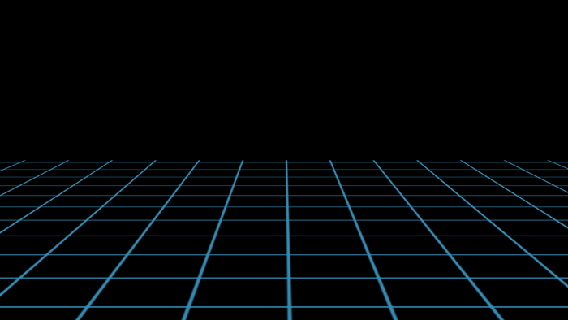

This website is based on Jorge Luis Borges' short story, The Library of Babel, published in 1941.The Library of Babel is about a library filled with hexagon shaped-rooms each containing vital information, translations of books into every language, personal biographies, and a special room containing magical books. I found the
idea of a magical library extremly interesting and decided to use this story for my website.
I decided to have four rooms which could only be accessed by the main page, The Library of Babel.
These four rooms would each contain other rooms accessed by clicking on the options reserved for each page.
For my main page, The Library of Babel, I decided on a black and white hexagon logo. That way it would not be distracting for a viewer of my website:
I decided on a bright, light blue color for the logo and navigation to provide differentiation between the white explanatory text for each page.
For my first room, The Peridot Room, the room contains three questions, when clicked on, contain answers. These questions are common questions one would ask or like to know about their future.
For my second room, The Sangria Room, the room contains personal biographies based on astrological signs of when a person is born.
For my third room, The Indigo Room, the room contains three book options, on different languages, with three selected pages.
For my fourth room, The Crimson Room, the room contains three video options, these videos were selected because of their first person-point of view, to make a viewer feel as if they were inside the video.
The Library of Babel describes hexagon-shaped rooms, so I decided to have a movable gif background filled with hexagons. I wanted my library to be futuristic, so I decided to use colors that would match the theme. This was the first gif I chose:
However, after a while, my head started to spin and I knew I had to change it. I then decided on a clean, bold, black background, but was dissatisfied by the uninteresting page. Finally, I found a background, containing two sections to it, allowing the eye to follow the background, but not get dizzy by it.

My next task was to make each of the rooms in The Library of Babel personal. I decided to make each of the rooms the same format as the main page, except with different colors. Peridot, green, Sangria, purple, Indigo, blue, and Crimson, red. Yet, again this made the website seem unprofessional and distracting, so I scrapped that idea, and kept each of the colors the same as the homepage.
Click Below to access my Presentation Page, a powerpoint explaining my font and color choices, images of my each page in my website, and challenges and resolutions I had in the making of my webpage; and my Sources Page, listing links to my sources.